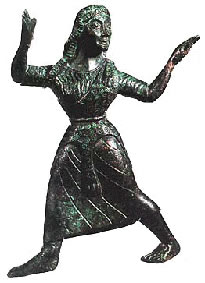

Në gjuhën turqishte, Tetova quhet Kalkandele (n) që në shqip do të thotë Mburoja e shpuar dhe lidhet me një tregim mitologjik i krijuar gjatë rrethimit të qytetit nga Ushtria Osmane... Varianti i parë thotë se mbrojtësit e qytetit rrihnin aq fortë mbi armikun sa që me shtizat e tyre arinin ti shpërthenin mburojat e kundërshtaritdhe dhe ta asgjësonin atë. Varianti i dytë flet për ushtarin osman, që gjatë një pushimi flinte në rrafshin poshtë qytetit i mbuluar me mburojën e tij për tu mbrojtur nga dielli. Nga kodra mbi qytet (sot Kalaja e Tetovës), u hodh me furi një thingi (lloj gjarpëri kërcyes) e etur për gjak, e tejshpoi mburojën dhe e qëlloi ushtarin e fletur në zemër. Mendohet se Tetovës i ka mbetur emri Tetovë nga koha e Skendërbeut, mendohet se Skendërbeu duke luftuar me Osmanllinjtë ka bërë tetë sulme (Tetë-hove - nga e folmja Tetovare) me ushtrinë e tij nëpër këtë qytet. Por historia duhet te jete shume e lashte se ne Muzeun arkelogjik ne Shkup ndodhet nje menade vallezuese nga koha e antikitetit grek. Nje engjashme eshte zbuluar edhe ne Apollonia te Fierit.
